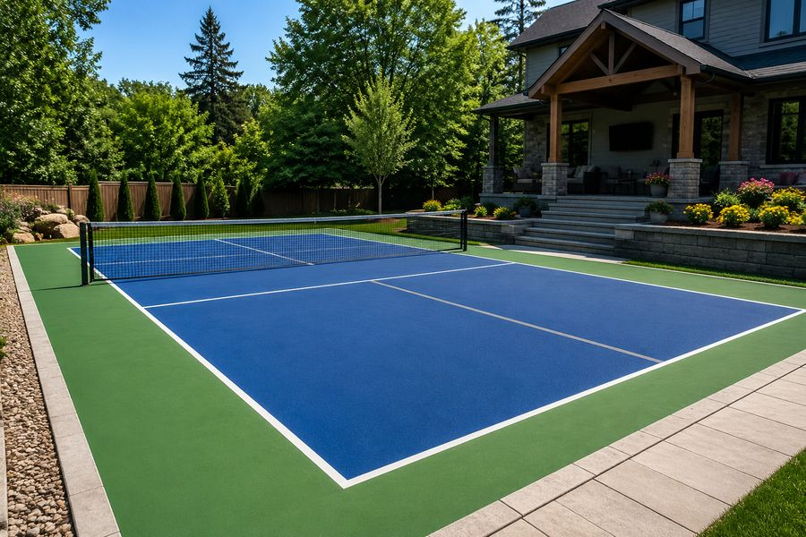
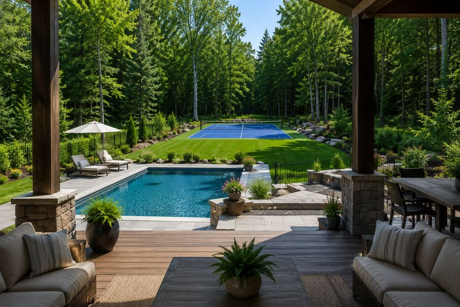

Residential
Backyard Pickleball Court Installation
Custom residential courts designed around your yard, built on a base that handles Ontario freeze-thaw. Concrete, acrylic surfacing, fencing, lighting and net systems.
- Full regulation and compact custom layouts
- Concrete base and multi-layer acrylic
- Fencing, lighting and windscreen options
- Free site visit and written quote
Get Free Quote Call (705) 242-8236
Free estimates · Locally focused service · Clear, written quotes
Residential Courts
A Backyard Court Built for Your Property
More homeowners around Peterborough are putting in pickleball courts every year. It has become one of the most requested backyard projects we take on.
A court turns a stretch of lawn that only ever gets mowed into a space the whole family uses. It is a place people gather, not just something to look at.
We design and build each court around your property, your budget and how you actually plan to play. Some customers want a full regulation layout with fencing and lights. Others want a simple pad for weekend games. Both are good projects.
Where we build residential courts
Peterborough, Lakefield, Bridgenorth, Ennismore, Selwyn, Douro-Dummer, Keene, Millbrook, Cavan Monaghan, Warsaw, Norwood, Havelock, Buckhorn, Omemee, Lindsay and out through Kawartha Lakes. Rural lots and waterfront properties are a particularly good fit because the space is there.

Design
Custom Layouts for Real Backyards
Very few yards are a clean rectangle with perfect drainage. Most have a shed, a septic bed, a row of maples or a fence line in the way. Designing around those is most of the job.
-
Full regulation
A 30 by 60 foot pad with 20 by 44 foot lines. Proper run-off on all four sides. This is what we recommend whenever the space allows.
-
Compact custom
Where the yard is tight we shrink the surround rather than the lines, or scale the whole layout down. Still a good game, just less run-off.
-
Multi-sport pad
Pickleball lines plus a basketball key, or a second set of lines for volleyball or ball hockey. Gets far more use from the same slab.
Court orientation
We lay courts out running north to south wherever possible. It keeps the low morning and evening sun out of players' eyes, which matters more than people expect once the court is actually in use.
Where the lot shape forces a different orientation, we plan for it with screening or by shifting the court so the worst glare falls outside normal playing hours.
The Build
Concrete Preparation and Base Work
This is where a court is won or lost. Everything above it is finish work.
Excavation
We strip the topsoil and cut the area to depth. Organic material has to come out because it breaks down and settles unevenly. We also establish the slope at this stage, roughly one percent in a single direction so water runs off instead of sitting.
Granular base
Crushed granular goes in and gets compacted in lifts rather than all at once. Compacting one deep layer looks the same on the surface and performs nothing like it. In frost-prone areas we build the base deeper, and on some sites we use rigid insulation under the slab to reduce heave.
Drainage
Where water goes is planned before anything is poured. That can mean a perimeter drain, a swale, or simply grading the surrounding ground so runoff moves away from the court and away from your house. Standing water on a court is nearly always a grading mistake, not a surfacing one.
Concrete
We form the pad, place reinforcement, set the net post sleeves below the finish level so there is nothing to trip on when the posts come out, then pour and finish. Control joints go in at planned spacing so the slab cracks where we want it to instead of where it wants to.
Curing
The slab cures fully before any coating goes on. Coating green concrete traps moisture and causes blistering and peeling later. It is the most common shortcut in this trade and we do not take it.
Options
Fencing, Lighting and Finishing Touches
-
Fencing
Fencing is optional but most residential customers add it. It keeps balls on the court, which matters more than it sounds when your court backs onto a road, a garden or a neighbour.
- Black vinyl coated chain link is the usual choice. It disappears visually and lasts.
- Eight to ten feet is standard. Four foot fencing with a top rail pad works for casual family play.
- Fencing on two or three sides only is a good way to cut cost where the yard already contains balls on one side.
- Acoustic panels can be mounted to the fence if noise is a concern.
-
Lighting
Lighting roughly doubles how much a court gets used, especially in spring and fall when the evenings are short.
- LED fixtures on poles, usually two or four poles around 20 feet tall.
- Aimed and shielded to light the court without spilling into neighbouring yards.
- Electrical work is done by a licensed contractor with the required ESA permit and inspection.
- Worth roughing in the conduit during the build even if you add fixtures later.
-
Drainage extras
Perimeter drains, catch basins or a regraded swale where the lot collects water. Cheaper to do now than to retrofit later.
-
Net systems
Permanent posts set in ground sleeves with a weather-rated tournament net. Portable nets are an option on multi-use pads.
-
Windscreen & shade
Windscreen on the fence cuts crosswind and adds privacy. A shade structure or bench area makes the court somewhere people linger.
Colours & Surfacing
Choosing Your Court Colours
An acrylic court is built up in layers. A resurfacer coat first, then colour coats, then the lines. The texture in the coating is what gives you grip and a consistent bounce.
The playing area and the surround are usually different colours. That contrast helps players read the boundary and makes the court look finished rather than like a painted driveway.
Popular combinations
- Blue inside, green surround. The classic. Best ball contrast and it looks right in a green Ontario yard.
- Blue inside, light blue surround. Modern and clean. Reads well from the house.
- Green inside, dark green surround. Blends into landscaping if you would rather the court not dominate the view.
- Grey or sand surrounds. Runs cooler underfoot and pairs well with natural stone hardscaping.
Cushioned surfacing
A cushioned acrylic system adds rubber granules under the colour coats. It takes some load off knees, hips and feet without changing how the ball bounces. If the main players are over fifty or plan to play several times a week, it is worth pricing out.
Want to compare acrylic against modular tile? Read our sport court tile page.
Avoidable Problems
What Goes Wrong on Badly Built Backyard Courts
We get called to look at courts other people built. The same three problems come up again and again, and all three trace back to the base.
-
Standing water
Almost always a grading error. The pad was poured flat, or sloped the wrong way, or the surrounding ground drains toward the court instead of away from it. Water sitting on acrylic shortens its life fast.
-
Cracking
A thin base, poor compaction, or missing control joints. Water gets into the crack, freezes, expands, and the crack grows every winter until it needs real repair.
-
Peeling coating
Usually coating applied over concrete that had not finished curing, or over a damp slab. The surface blisters and lifts, and the only fix is to strip and redo it.
Root intrusion is the fourth one
Courts built too close to mature trees deal with roots lifting the slab and heavy leaf litter every fall. We plan placement to keep the court clear of major root zones wherever the lot allows it.
Free Site Visit
See What Fits in Your Yard
Send us your address and rough yard size. We will come out, measure, check the drainage and show you a layout that works.
Questions
Frequently Asked Questions
How much space do I need for a backyard pickleball court?
The painted lines are 20 by 44 feet. The recommended pad is 30 by 60 feet, which is 1,800 square feet. That gives about five feet on each sideline and eight feet behind each baseline.
If your yard will not take that, we can lay out a smaller court that still plays well for family games. We will be straight with you about the trade-offs before you spend anything.
Can you build a court on a sloped yard?
Usually yes. It depends how steep the grade is. A gentle slope is simple to cut and fill. A steeper one may need a retaining wall or extra fill, which adds to the cost.
We measure the grade during the site visit so the quote reflects the real work involved instead of a guess.
Do I need a permit for a backyard court?
It varies by municipality. The slab itself may not need a building permit, but zoning rules on setbacks and rear yard coverage still apply. Fencing above a certain height and any court lighting usually do require approvals, and electrical work needs an ESA permit and a licensed contractor.
We tell you what applies to your property and supply the drawings and dimensions for your application.
Will a backyard court bother my neighbours?
It can. Pickleball makes a sharp, repeating sound that carries. Where we place the court on your lot makes the biggest difference. Beyond that, acoustic panels on the fence, a planted buffer and quieter paddles all help.
We raise this at the planning stage rather than after the court is built.
Can I put a court on my existing driveway or patio?
Sometimes. The slab has to be the right size, structurally sound, correctly sloped and free of major cracking. We check all of that during the site visit. If it works, you save a large part of the cost because the base is already there.
What is the best colour combination?
Blue inside with green surrounds is the most popular and gives excellent ball contrast. Lighter colours stay cooler in summer. Darker colours melt snow faster in spring. We will show you the options and let you pick.
How long will my backyard court last?
With a properly compacted base, correct drainage and a good acrylic system, expect fifteen to twenty years of play before resurfacing. Resurfacing then buys you another eight to ten years without touching the base.
Can the court be used for other sports?
Yes. Adding a second set of game lines and a basketball hoop is a common request, and it makes the pad far more useful if you have kids. Volleyball and ball hockey work on the same surface too.
Service Area
Where We Build Pickleball Courts
We are based in Peterborough and most of our work is within about an hour of the city. If your property is not on the list below, call anyway. We travel for the right project.
- Peterborough
- Lakefield
- Bridgenorth
- Ennismore
- Selwyn
- Douro-Dummer
- Norwood
- Havelock
- Millbrook
- Keene
- Warsaw
- Buckhorn
- Cavan Monaghan
- Otonabee-South Monaghan
- Bailieboro
- Curve Lake
- Lindsay
- Kawartha Lakes
- Bobcaygeon
- Omemee
- Cobourg
- Port Hope
- Campbellford
- Hastings
- Apsley
- Young's Point
Peterborough & Selwyn Township
Peterborough, Lakefield, Bridgenorth, Ennismore, Young’s Point and Curve Lake. These are our closest jobs and usually our fastest scheduling. Lots north of the city often have room for a full 30 by 60 foot court with space to spare.
East & North of the City
Douro-Dummer, Warsaw, Norwood, Havelock, Apsley and Buckhorn. Rural acreage and waterfront properties here suit a court well, though soil and drainage conditions change a lot from lot to lot.
South & West
Millbrook, Cavan Monaghan, Keene, Bailieboro, Otonabee-South Monaghan, Omemee, Lindsay, Bobcaygeon and the wider City of Kawartha Lakes.
Northumberland & Beyond
Cobourg, Port Hope, Campbellford and Hastings. We take on work in these areas regularly, especially commercial builds and court resurfacing.
Free Estimate
Get a Free Backyard Court Quote
Tell us about your project. We’ll get back to you with next steps and a time for a site visit.
- No cost, no pressure site visit
- Clear written quote with the work itemized
- Straight answers about what your site actually needs
- Serving Peterborough and the surrounding townships